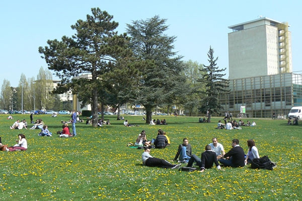
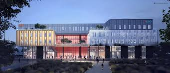
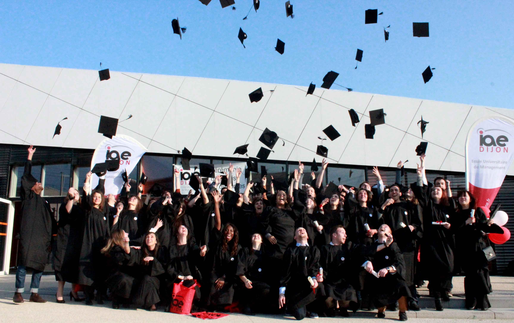
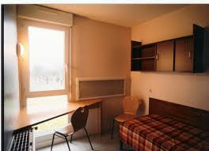
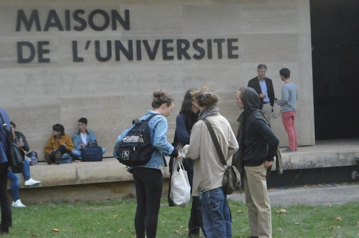

VIE ETUDIANTE
Dijon, là où il fait bon d'étudier
Même s’il est vrai que Dijon n’est certainement pas la première destination rêvée de la plupart des étudiants, cette ville gagne à être connue et a beaucoup à offrir. Dynamique et agréable à vivre, elle est riche culturellement et forte d’un patrimoine attractif. La région est notamment réputée pour ses spécialités gastronomiques : la moutarde, le pain d’épice, les escargots ou encore la crème de cassis.
Les 32 000 jeunes qui sont venus étudier à Dijon — dont 3000 à 4000 étudiants étrangers — ne s’y sont pas trompés et constituent une partie importante de la population totale de la ville (14 %) : pas de doute, Dijon est donc une ville étudiante prisée et attractive !
Quels établissements scolaires trouve-t-on à Dijon ?

Si vous faites le choix de venir étudier à Dijon, vous n’aurez que l’embarras du choix : en effet, les établissements de l’enseignement supérieur y sont nombreux et variés. Parmi eux, vous pourrez retrouver :
- L’université de Dijon, récemment embellie et rénovée, dont le campus s’étend sur 115 hectares et accueillant environ 30 000 étudiants chaque année. La recherche occupe aussi une grande part de la vie de la fac, avec 29 unités labellisées.
- Des lycées accueillant des classes préparatoires
- Des écoles supérieures spécialisées dans un domaine
- Des centres de formation professionnelle
Voici quelques exemples d’écoles spécialisées que vous pourrez retrouver dans la ville de Dijon :
- École d’optique
- École de coiffure
- École de commerce
- École de commerce après bac
- École de commerce international
- École de communication
- École de comptabilité
- École de design
- École de droit
- École de gestion
- École de gestion après bac
- École de graphisme
- École de management
- École de management après bac
- École de maquillage
- École de marketing
- École de massage
- École de notariat
- École de psychologie
Quels diplômes pourrez-vous préparer à Dijon ?
Là encore, le champ des possibles sera très large. Études longues ou courtes, formations diplômantes ou non, cursus spécialisés ou généralistes, parcours professionnalisants ou à vocation de recherche, suivi en initiale, en formation continue ou en formation en alternance… Il vous faudra faire un choix entre tout cela !
Voici la liste des diplômes que vous pourrez préparer dans la ville de Dijon :
- Bac pro
- Bachelor
- Bilan d’orientation
- BTS
- BP
- CAP
- CESAP
- CEAP
- CQP
- Prépa
- Diplôme d’Etat
- DCG
- DIMN
- DMA
- Diplôme d’ingénieur
- DNA
- DSAA
- DSN
- DUT
- DNSEP
- Formation professionnelle
- Licence
- Licence pro
- Master
- Mastère spécialisé
- MC
La vie étudiante à Dijon
Celle que l’on nomme la belle endormie est pourtant bel et bien éveillée et animée : il est impossible de s’ennuyer à Dijon ! Voici des indications sur la vie étudiante dans cette ville, qui pourront peut-être vous donner envie d’y faire vos études.
Quel budget faut-il prévoir ?
Voilà un avantage non négligeable de la ville : il est possible d’y vivre — et même de bien y vivre — sans pour autant se ruiner ! En effet, les tarifs pratiqués à Dijon sont généralement nettement plus bas que ceux dans de nombreuses autres villes étudiantes de France.
Concernant le logement, qui représente une grosse part des dépenses des jeunes (54 % selon une enquête de l’UNEF), la location d’un appartement représentera un coût modéré pour les étudiants : 395 € par mois en moyenne, contre 824 € à Paris, 570 € à Nice ou encore 466 € à Lille.
Pour ce qui est des transports, le bât blesse : Dijon se situe légèrement au-dessus de la moyenne des prix appliqués en France, avec un budget à prévoir d’environ 315 € pour l’année. Il faut néanmoins souligner la qualité du réseau de transports de la ville, très efficace avec de nombreux bus, mais aussi le tramway, qui dessert notamment le campus universitaire.
Enfin, les sorties et loisirs ne seront pas excessifs à Dijon : il est proposé aux jeunes une carte culture qui permet l’accès à des activités à moindre coût, par exemple. À titre indicatif, une pinte de bière vous coûtera en moyenne 4,5 € à Dijon contre 7 € à Paris.
Quels loisirs ?

Voici une liste non exhaustive de ce qui fait de Dijon une ville résolument animée et dynamique, pouvant séduire le plus grand nombre de jeunes :
- Un patrimoine exceptionnellement riche, de nombreuses découvertes et visites à faire dans la ville (abbayes, cathédrales, clochers, Tour Philippe Le Bon, côté historique avec les Ducs de Bourgogne, etc.)
- Un terroir d’exception avec les spécialités culinaires et les vins de Bourgogne très réputés
- De nombreux bars et restaurants, mais aussi des boutiques et tout le nécessaire pour une journée shopping
- Des espaces culturels divers
- Des espaces verts aménagé
- Des événements venant rythmer l’année et animer la ville : festival de cinéma, concerts en ville, Dijon Plage…
La ville est distinguée pour son nombre d'étudiants, son attractivité, ses logements...
L’Étudiant récompense la ville de Dijon du trophée de la ville où il fait bon étudier. Cette distinction a été remise ce jour à Nathalie Koenders, première adjointe au maire, représentant François Rebsamen, maire de Dijon, président de Dijon métropole, à l’occasion de l’inauguration du salon de l’Étudiant de Dijon qui se déroule les 1er et 2 février.
Le magazine l’Étudiant salue à nouveau Dijon comme l’une des meilleures villes de France où il fait bon étudier. Dans son palmarès 2018-2019, la capitale régionale de Bourgogne-Franche-Comté termine 3ème dans sa catégorie, composée de 12 «grandes villes étudiantes».
Classée 1ère grande ville pour son nombre d’étudiants Erasmus, Dijon ravit également le haut du classement en matière d’attractivité en obtenant la 2ème place et s’illustre au 4ème rang pour le logement. Au classement national, toutes tailles confondues, Dijon se maintient à la 16ème place sur 44 villes accueillant plus de 8 000 étudiants. Enfin, selon un sondage de l’Étudiant, 95 % des lecteurs du magazine recommandent Dijon*.
Dijon s’impose comme une grande ville universitaire à dimension internationale. La quinzaine d’établissements d’enseignement supérieur implantés sur le territoire et le principal campus de l’Université de Bourgogne entré dans le prestigieux classement de Shanghai, assurent la possibilité d’études de haut niveau et de grande qualité. Plus de 400 formations sont proposées : médecine, pharmacie, droit, lettres, sciences humaines, économie, biologie, sciences du goût, de la vigne et du vin… offrant également un terrain propice aux activités de recherche et à l’innovation. Ce pôle d’excellence en matière d’enseignement supérieur est enrichi par de nombreux atouts tels que le cadre de vie, le coût raisonnable des logements, la qualité du réseau de transport urbain et la richesse de la vie culturelle… Autant d’avantages qui attirent aujourd’hui plus de 35 000 étudiants dont 10 % d’internationaux.
Dijon, métropole universitaire en chiffres :

35 000 étudiants dont 3 500 étudiants internationaux.
1 université figurant dans le prestigieux classement de Shanghai.
400 formations.
29 laboratoires de recherche dont 15 unités mixtes où collaborent université et organismes de recherche (CNRS, INRA, INSERM…) et plus de 1 500 chercheurs.
Près de 15 grandes écoles déjà implantées, en expansion ou en cours d’ouverture : SciencesPo campus de Dijon, Burgundy School of Business, ENSA (École nationale supérieure d’art), IAE (École universitaire de management), EHEA (École des hautes études en apiculture), école de gendarmerie, ESIREM (École d’ingénieurs de l’université de Bourgogne), ESTP (École supérieure des travaux publics), ESEO (École d’ingénieurs généraliste), ESADD (École supérieure appliquée du design)…
Le classement du magazine l’Étudiant
- 15 critères.
- Classement de 44 unités urbaines de 8 000 étudiants et +.
- Classification :
- Métropole = unités urbaines de plus de 40 000 étudiants.
- Grande ville = unités urbaines de 20 000 à 40 000 étudiants.
- Ville moyenne = unités urbaines de 8 000 à 20 000 étudiants.
Cette 12e édition du palmarès des villes se concentre sur les vrais besoins des étudiants : une offre de formation qui soit de qualité et suffisamment diversifiée, des logements en nombre et pas trop chers, un réseau de transports en commun efficace et abordable, une offre culturelle riche et diverse, un marché de l’emploi important et dynamique, une ville qui attire les étudiants européens du programme Erasmus, et un peu de soleil en prime...